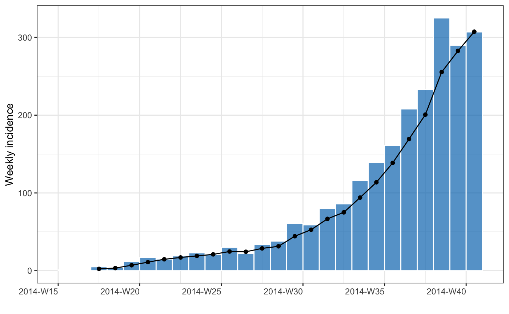
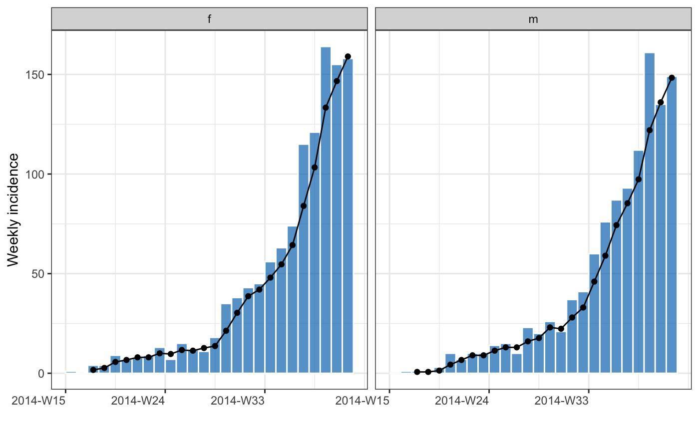

Add and remove a rolling average
rolling_average(x, before = 2) remove_rolling(x)
| x | An |
|---|---|
| before | how many prior dates to group with. |
rolling_average An incidence() object with an additional, averaged,
column.
remove_rolling An incidence() object.
If groups are present the average will be calculated across each grouping, therefore care is required when plotting.
data(ebola_sim_clean, package = "outbreaks") dat <- ebola_sim_clean$linelist inci <- incidence(dat, date_index = date_of_onset, interval = "week", last_date = "2014-10-05", groups = gender)#>#> Warning: Removed 2 rows containing missing values (position_stack).#> Warning: Removed 2 rows containing missing values (position_stack).#> Warning: Removed 4 rows containing missing values (position_stack).#> Warning: Removed 4 rows containing missing values (position_stack).inci %>% rolling_average() %>% remove_rolling()#> An incidence2 object: 52 x 4 #> [2307 cases from days 2014-04-07 to 2014-09-29] #> [interval: 1 week] #> [cumulative: FALSE] #> #> bin_date week_group gender count #> <date> <aweek> <fct> <int> #> 1 2014-04-07 2014-W15 f 1 #> 2 2014-04-07 2014-W15 m 0 #> 3 2014-04-14 2014-W16 f 0 #> 4 2014-04-14 2014-W16 m 1 #> 5 2014-04-21 2014-W17 f 4 #> 6 2014-04-21 2014-W17 m 1 #> 7 2014-04-28 2014-W18 f 4 #> 8 2014-04-28 2014-W18 m 0 #> 9 2014-05-05 2014-W19 f 9 #> 10 2014-05-05 2014-W19 m 3 #> # … with 42 more rows #>